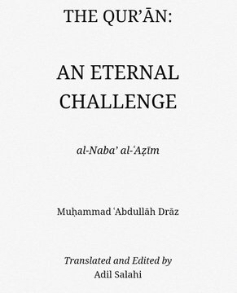
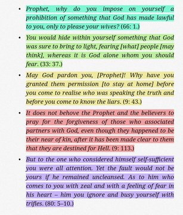
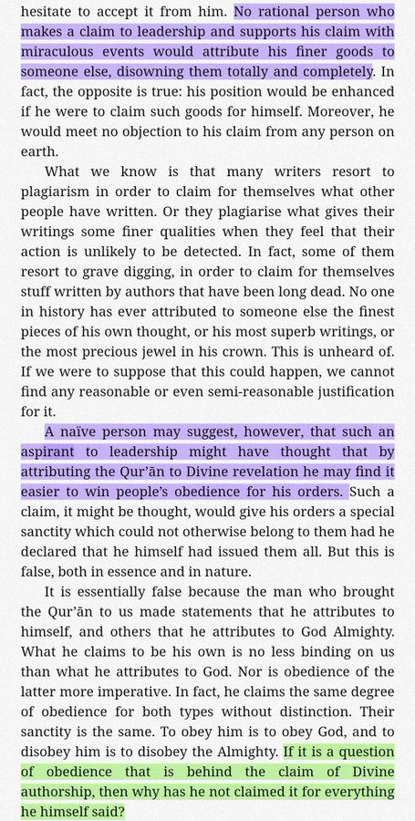
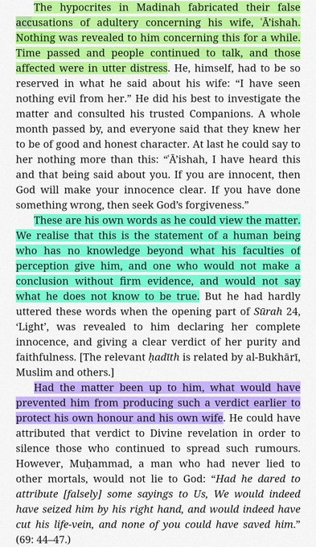
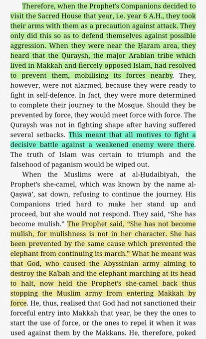
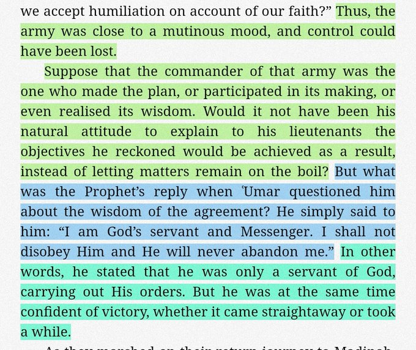
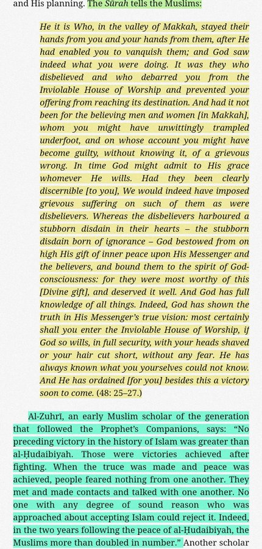
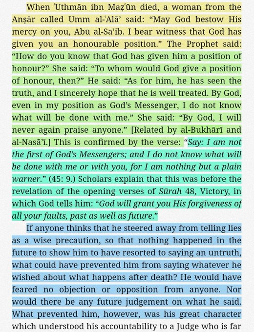

Indeed, had the Qur’ān been the product of his (Prophet Muhammad's) own conscience, he would have suppressed some parts of it when the need arose &
had he wished to suppress any part of it, then such verses would be the first to be so suppressed.
(Quran, ʿAbdullāh Drāz pg.12)


If Prophet Muhammad was the author of Quran:
i. No rational person who makes a claim to leadership and supports his claim with miraculous events would attribute his finer goods to someone else (Allah),
disowning them totally and completely.
ii. A naïve person may suggest, however, that such an aspirant to leadership might have thought that by attributing the Qur’ān to Divine revelation he may find it
easier to win people’s obedience for his orders.
iii. It is false since the man who brought Qur’ān made statements that he attributes to himself, & others that he attributes to Allah.
If it is a question of obedience that is behind the claim of Divine authorship, then why has he not claimed it for everything he himself said?

• Hypocrites in Madinah fabricated their false accusations of adultery concerning his wife, ʿĀ’ishah.
Nothing was revealed for a month.
Had the matter been up to him, what would have prevented him from producing such a verdict earlier to protect his own honour and his own wife.

• In 6 A.H, Prophet & his companions decided to visit sacred house. Companions were armed and ready to fight in self defense and Quraysh
was also not in a fighting condition. This meant that all motives to fight a decisive battle against a weakened enemy were there.

Yet, Prophet's camel was stopped refused to continue journey at Al Hudaybiah.
The Prophet said, “She has not become mulish, for mulishness is not in her character. She has been prevented by the same cause which prevented
the elephant from continuing its march.” Companions were shocked and saddened Thus, the army was close to a mutinous mood, and control could have been lost.
Suppose that the commander of that army was the one who made the plan, or participated in its making, or even realised its wisdom.
—
Would it not have been his natural attitude to explain to his lieutenants objectives he reckoned would be achieved as a result, instead of letting matters
remain on the boil?
Yet he said:
“I am God’s servant and Messenger. I shall not disobey Him and He will never abandon me.”

As they marched on their return journey to Madinah, the Prophet’s Companions were still unaware of the wisdom of the settlement the Prophet had accepted.
Then Sūrah 48 of the Qur’ān, entitled Victory, was revealed to explain it all:

• Prophet forbade a companion from saying that another companion achieved a blessed position after death. What could have prevented him from saying
whatever he wished about what happens after death? He would have feared no objection or opposition from anyone.

Why Muhammad SAW was not the author of the Quran